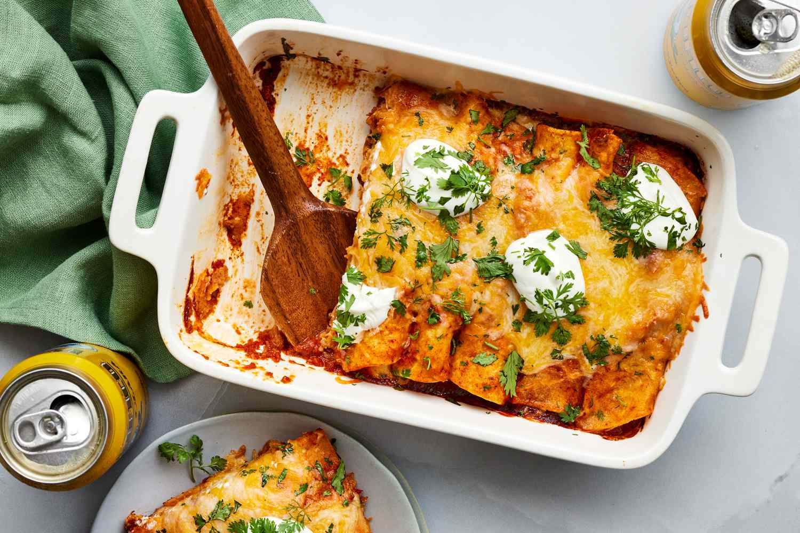

Chicken Enchilada Recipe

Description
These chicken enchiladas couldn't be easier. We use two great shortcuts to make these Tex Mex-style enchiladas entirely possible for busy weeknights: pre-cooked chicken and a store-bought enchilada sauce. In under an hour, this family favorite can be on the dinner table, sides and all.
Tender shredded chicken, robust red enchilada sauce, and loads of cheese are what you'll get with a pan of these chicken enchiladas. You can substitute a few ingredients to make this recipe just as you'd like it, and it'll always turn out delightful.
Once baked, these enchiladas also freeze well, so you can get ahead for a busy week with a pan for the future. Don't skip the sides—we love Mexican rice, avocado salad, and homemade salsa with our enchiladas.
Ingredients
- Cooking spray
- 1 (8 ounce) package red enchilada sauce
- 2 cups shredded rotisserie chicken
- 1 tbsp taco seasoning
- 1/2 cup sour cream
- 8 ounce Monterey Jack cheese
- 8 (6 in) corn tortillas
- 4 ounce shredded Mexican blend cheese
- 1 tbsp chopped cilantro
Steps
- Preheat oven to 375°F. Coat an 11- x 7-inch baking dish with cooking spray. Spread 1/2 cup of the enchilada sauce in bottom of prepared baking dish.
- Stir together chicken, taco seasoning, and 1/4 cup of the sour cream in a medium bowl until chicken is fully coated.
- Place 1/4 cup chicken mixture and 1 Monterey Jack cheese stick on edge of 1 tortilla, and roll tortilla tightly. Place in baking dish, seam side down. Repeat with remaining tortillas, chicken mixture, and cheese sticks.
- Brush remaining 1/2 cup sauce all over tortillas. Cover with aluminum foil, and bake in preheated oven for 30 minutes.
- Remove from oven, and remove foil. Top enchiladas evenly with shredded cheese. Bake at 375°F, uncovered, for 5 minutes or until cheese is melted.
- Remove from oven; let stand for 10 minutes.
- Dollop with remaining 1/4 cup sour cream, and sprinkle evenly with cilantro.